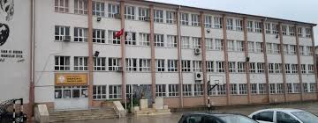
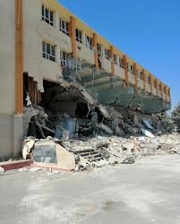
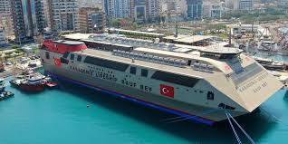
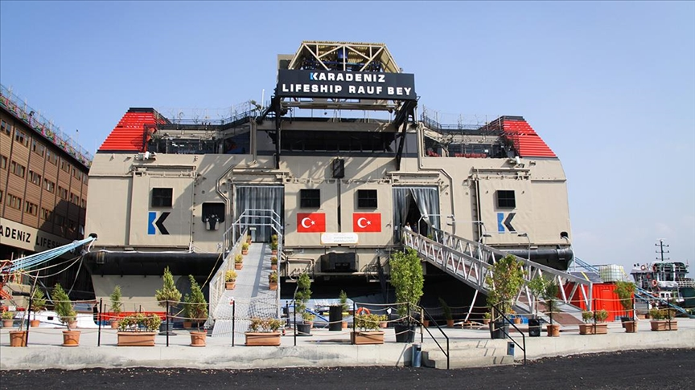
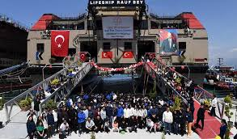

Osman Ötken Anadolu Lisesi 1985 açılıp günümüzde hala eğitim vermektedir resimde görüldüğü gibi 6 şubat faciyasındna önce bu binada eğitim veriyordu.

Yaşanan 6 şubat faciyasından sonra Osman Ötken Anadolu Lisesinin binası kullanılmaz hale geldi ve burda verilen eğitime son verildi.

Osman Ötken Anadolu Lisesi eğitim vermeye devam etmesi karar verildi ve bir yer arandı Karadeniz Holding tarafından yapılan yardımda Osman Ötken Anadolu Lisesine bir kuruz gemisi verildi ve orası bir pansiyonlu okula dönüştürüldü.

Okulumuz adına bu gemi eğitimimiz için bizlere umut ışığı oldu

Bütün öğretmenlerimiz, yöneticilerimiz ve okul arkadaşlarımızla birlikte gemideki eğitimimize mutlu bir şekilde devam ettiriyoruz
